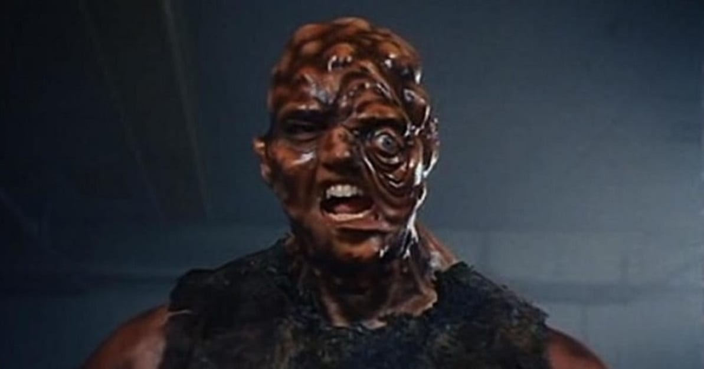
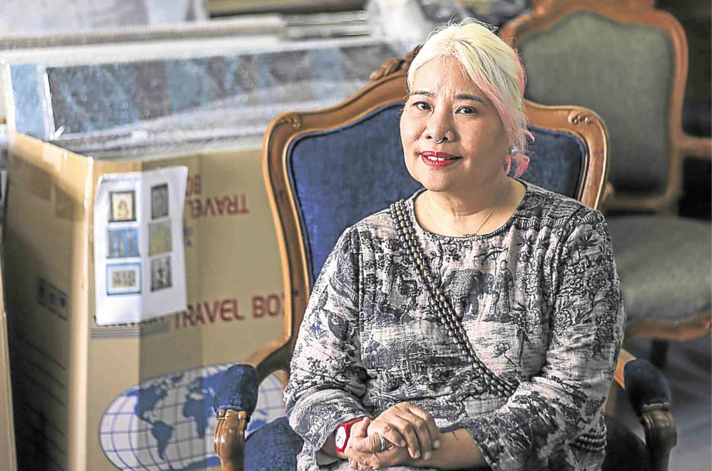

The Toxic Avenger
Back in December it was announced that Legendary Entertainment is prepping a big budget reboot of Troma’s cult classic mutant superhero comedy franchise The Toxic Avenger, and now comes word that the project has found its director. Variety is reporting that actor turned filmmaker Macon Blair (Hold the Dark, I Don’t Feel at Home in This World Anymore) has signed on to write and direct the new movie, which is being produced by Lloyd Kaufman and Michael Herz of Troma along with Alex Garcia and Kay Ashenfelter for Legendary. The original film, released in 1984, a mild-mannered janitor who finds himself transformed into a mutated superhuman crime-fighter after falling into a vat of toxic waste. An early success for Troma, it spawned three sequels – The Toxic Avenger Part II, The Toxic Avenger Part III: The Last Temptation of Toxie and Citizen Toxie: The Toxic Avenger IV – along with a stage musical, cartoon, and Marvel comic book series. As yet, there’s no word on a potential release date for The Toxic Avenger, but the project is said to be a high priority for Legendary, which is hoping to turn the property into a new big budget franchise.
Reboot to Be
Two years after making his directorial debut with “I Don’t Feel at Home in This World Anymore,” Macon Blair is stepping behind the camera for Legendary’s “Toxic Avenger” reboot. The actor-turned-filmmaker, whose on-screen resume includes everything from “Blue Ruin” and “Green Room” to “The Florida Project” and “Logan Lucky,” will both write and direct. Variety first broke the news, including the fact that Troma’s Lloyd Kaufman and Michel Herz are producing and Alex Garcia and Jay Ashenfelter of Legendary are overseeing the project. Read More:‘Small Crimes’ Review: Macon Blair and Evan Katz Join Forces For a Modestly Satisfying Dose of Pulp Fiction The former two also directed the 1984 original, a midnight-movie staple that was followed by the sequels “The Toxic Avenger Part II,” “The Toxic Avenger Part III: The Last Temptation of Toxie,” and “Citizen Toxie: The Toxic Avenger IV” (not to mention a comic book, musical, and animated series). “The Toxic Avenger” tells the tried-and-true story of a 98-pound janitor who falls into a vat of toxic waste (as you do) and, imbued with newfound powers, sets about…avenging. Read More:‘I Don’t Feel At Home in this World Anymore’ Review: Melanie Lynskey Is a Frustrated Vigilante In Macon Blair’s Delightfully Dark Directorial Debut Talks of a remake extend to at least 2010, when the first attempt at bringing the contaminated superhero back to life was announced; that version never materialized, and neither did one slated to be directed by Conrad Vernon and produced by Guillermo del Toro. Arnold Schwarzenegger was in talks to star as of 2013, but left later that year to give “Terminator: Genisys” his full attention. Legendary acquired the rights to remake “The Toxic Avenger” last December. No casting details or release date have been announced as of yet.
The resurrection of Gabriela Silang, victim turned avenger
The archetype of the woman warrior runs deep in the human psyche. The ancient Brits had Boudica, who led her tribe against the Romans. The medieval French had Joan of Arc, who battled the English. And we had Gabriela Silang, the first in a long line of insurgent Filipinas, who led the Ilocanos in an armed revolt against the Spanish colonial forces in the mid-18th century. “I saw her statue on Ayala Avenue, and she was just this tiny girl on a tiny horse, and I thought, ‘We’ve kind of forgotten about Gabriela Silang,’” says multimedia artist Plet Bolipata. “That was when it hit me: We should put Gabriela Silang back on the Philippine map, make her of this day and age so more people can relate to her.” ‘Yarn mom’ Bolipata says her first impulse was to “yarn mom” Silang. “Since I do knitting and crocheting, I wanted to make her prettier so people would notice her more,” she says. The idea was quickly nixed, however. A heroine deserved a more heroic transformation, so instead Bolipata conceptualized a more mythic retelling of Silang’s story through a multimedia art installation, which she’s exhibiting March 26-31 at Art Central Hong Kong, one of the most important art fairs in Asia. She will show her work with those of husband Elmer Borlongan and sculptor Daniel de la Cruz at Art Cube’s booth, representing the Philippine art scene in the international contemporary art world.